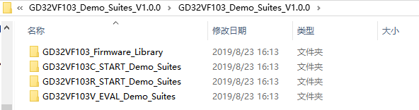
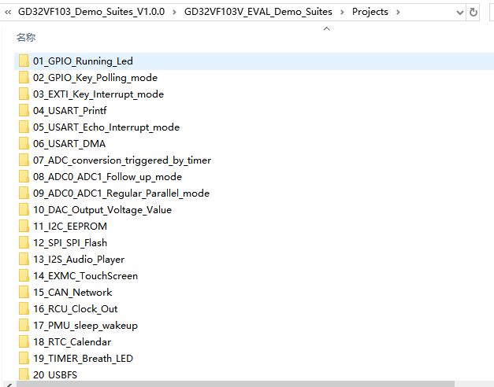
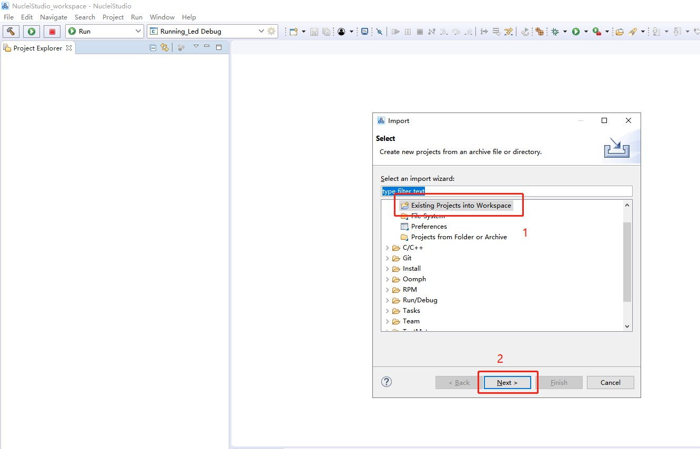
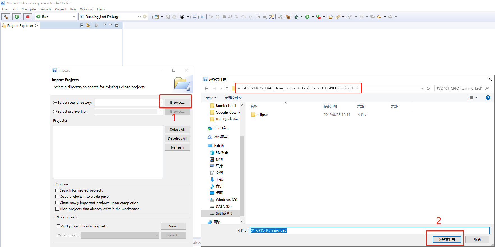
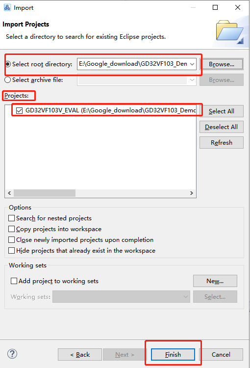
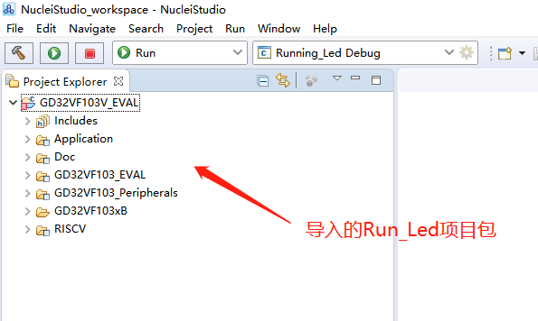

如需更多信息，请访问www.riscv-mcu.com
使用Nuclei Studio 快速开发GD32VF103的工程
此文档是面向已经有一定Nuclei Studio使用基础的用户，省去了安装、下载和创建工程等介绍流程，主要指导用户如何下载GD提供的的Demo_suites，并且快速将其中已有的示例工程导入到Nuclei Studio中，然后用户可以基于这些DEMO进行快速开发。如果需要了解NucleiStudio基础的使用方法，请参考《Nuclei Studio快速上手手册》。
1.下载GD32VF103配套的Demo_Suites
Demo_Suites的下载地为https://github.com/riscv-mcu/GD32VF103_Demo_Suites。文件内包含GD32VF103C_START、GDVF103R_START和GD32VF103V_EVAL三种开发板的Demo_Suites，如图1-1所示。

本文以GD32VF103V_EVAL配套的的Demo_Suites为例，包含如图1-2所示的外设使用示例项目。

2.使用Nuclei Studio 导入Demo_Suites工程
启动Nuclei StudioE后，在菜单栏选择”File->Import“，出现如图对话框，选择”General“菜单下”Exit Project into Workspace“，设置导入方式，然后点击按钮”Next“。

选择导入的方式后，点击” Browse“按钮选择上一节介绍的Demo_Suites中工程路径。注意：进入到”eclipse"这一级目录即可，如图2-2所示。

选择好Import的项目后，如果导入有效，会出现如图2-3所示的效果，在“Project”栏下出现的工程的名称,然后点击按钮“Finish”。

图2-3 Import显示
设置完以上操作后，IDE界面的“Project Explorer”栏中出现了导入的项目包，可以点击查看项目包的文件结构。如图2-4所示。

至此，Import项目已经完成了，设置工具链路径，运行和调试项目的流程可以参考Nuclei Studio 快速上手手册的第三、四、五和六章。